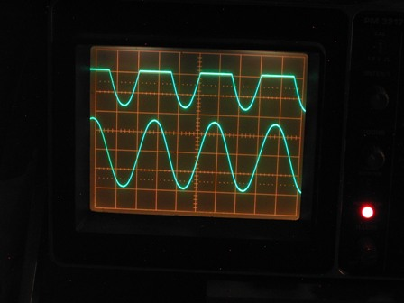
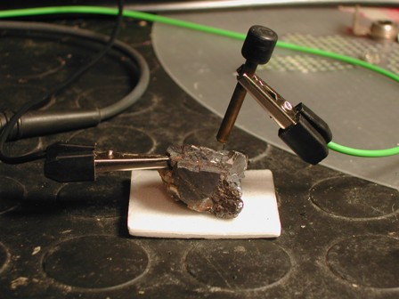
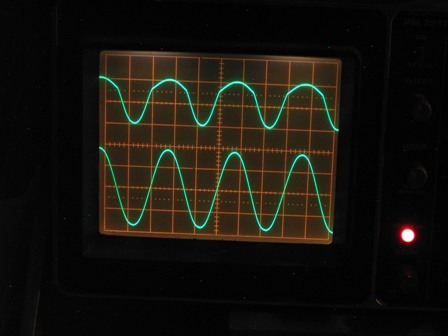
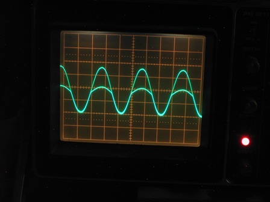
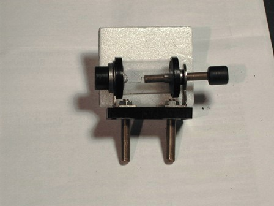

Quale tempo migliore di una uggiosa e piovosa giornata di ottobre per fare un test sperimentale sulle proprietà semiconduttrici del solfuro di piombo cristallizzato, cioè della galena?
(Scherzi a parte, qualcosa di attinente a quello che dirò oggi si trova rispolverando i miei vecchi post n. 147 e 149).
La galena, per funzionare come diodo rivelatore (raddrizzatore in alta frequenza) deve comportarsi nel seguente modo: applicando un segnale sinusoidale in ingresso, si deve ottenere un segnale "raddrizzato" (mancante delle mezze semionde della sinusoide, positive o negative) in uscita.
Andiamo a verificare se è vero.
Materiale occorrente:
- Cristallo di galena
- Generatore sinusoidale
- Oscilloscopio a doppia traccia
- Diodo al germanio di comparazione
Il semplicissimo schema del circuito è il seguente:

Il segnale del generatore (la frequenza poco importa in questo caso) viene mandato al canale A dell'oscilloscopio e al diodo D (il cristallo di galena in prova) e poi da questo al canale B dell'oscilloscopio, per poter confrontare la forma del segnale in ingresso e in uscita dal cristallo stesso.
La resistenza R (di circa 1 Kohm) è il carico del diodo, indispensabile per visualizzarne il corretto funzionamento raddrizzante.
Prima della prova ho verificato il circuito utilizzando un diodo al germanio di comparazione, ed ecco come è apparso all'oscilloscopio il segnale corretto: in basso la sinusoide completa (canale A) ed in alto l'uscita dopo il diodo (canale B).
Si vede che il diodo ha fatto il suo dovere tagliando di netto le creste positive.
(Invertendo i contatti del diodo verrebbero tagliate le creste negative, e questo tipo di raddrizzatore viene detto "a semionda").

Ora è la volta del mio paleozoico semiconduttore, ovvero della galena... e qui cominciano le difficoltà.
I contatti elettrici al cristallo sono stati fatti con una presa a coccodrillo da una parte ed il cosiddetto "baffo di gatto" (un sottile filo di acciaio) dall'altra.
Una settantina di anni fa abbondanti, quando con la radio a galena si ascoltava abusivamente Radio Londra, occorreva una infinita pazienza per posizionare il baffo di gatto su un punto preciso del cristallo, dove esso è davvero semiconduttore e solo in quel punto, difficile da trovare, la ricezione era possibile.

Il setup sperimentale, con i contatti sul cristallone di PbS
Pur con molta esperienza su questo tipo di ricevitori, devo dire che mi aspettavo un funzionamento del cristallo molto più immediato, mentre per visualizzare e fotografare all'oscilloscopio una parvenza di effetto raddrizzante ho dovuto posizionare il contatto UNA INFINITA' di volte, e lo dico in senso letterale.
Ho provato anche con due tipi di minerale di diversa provenienza ed i risultati erano sempre i medesimi: conduzione quasi perfetta su quasi tutti i punti, come fosse un normale conduttore ohmico, e quindi come risultato si aveva sempre uguale forma d'onda sia in ingresso che in uscita.
A forza di sfiorare il cristallo su diversi punti, ad un certo punto il meglio che sono riuscito alla fine ad ottenere è ciò che si vede nell'immagine qui sotto:

Nella traccia del canale B (in alto) si vede una sinusoide asimmetrica, ben lontano dalla forma ideale vista prima, ma con le semionde positive abbastanza attenuate, segno evidente di un comportamento non lineare del cristallo.
Sovrapponendo le due tracce dell'oscilloscopio l'effetto si nota ancora meglio (immagine qui sotto).

Per concludere, questo diodo al solfuro di piombo raddrizza sì in qualche modo, ma lo fa malaccio, in perdita, come una valvola idraulica senza guarnizione.
Consideriamo tuttavia che questi rivelatori erano in uso quando i diodi al germanio (e più tardi quelli al silicio) erano ancora di là a venire e nessuno ancora parlava di elettroni e lacune, di drogaggio P e drogaggio N, quindi accontentiamoci abbondantemente.
Bene o male il sistema funzionava e portava nelle case anche senza energia elettrica dei nonni la voce del Colonnello Stevens che aggiornava sull'avanzamento degli alleati verso la Linea Gotica.
Ricordo che quando da bambino giocavo con la radio a galena era effettivamente assai laborioso trovare il punto sensibile sul cristallo, ma ormai i miei tempi erano maturi per trovare facilmente in commercio i comodisssimi diodi al germanio (i famosi 1N34 o gli OA70), che non abbisognavano di nessuna regolazione ed erano estremamente più sensibili della macchinosa galena d'anteguerra.
Oggi, dopo un po' di decenni, ho finalmente verificato sperimentalmente perchè avevo ragione a spazientirmi quando occorreva pasticciare mezz'ora per muovere microscopicamente quel baffo di gatto sulla superficie del cristallo e tante volte nemmeno così si riusciva a sentire un accidente.

Il vecchio detector a galena col baffo di gatto regolabile
E la pirite? E la zincite? E il carborundum? Non erano tutti usati, chi più chi meno, come cristalli rivelatori nei tempi che furono?
La pirite l'ho provata, e trovarci un punto stabile in cui è semiconduttrice (che esiste) è quasi impossibile.
Gli altri due semplicemente non li ho, altrimenti se ne andava un'altra bellissima giornata piovosa di ottobre.